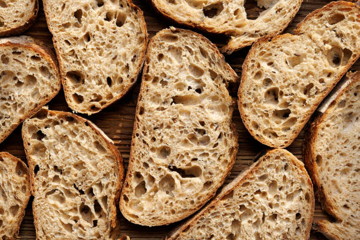

Sourdough
Home

Description
A basic sourdough recipe that makes a simple unflavored loaf. Once this is mastered, you can begin experimenting with all sorts of additions!
Ingredients
- 1000g Bread Flour
- 200g Sourdough Starter
- 750g Water
- 22g Salt
Steps
- First, you'll want to feed your sourdough starter. There's many ways to do this, see notes at the end for instructions.
- Once starter is well fed, combine with water. Whisk with dough whisk until combined, bubbly, and milky.
- Combine flour and salt with starter and water mixture. Mix until a homogenous shaggy dough forms.
- Let rest for 1 hr covered with a dish towel or loose plastic wrap.
- Stretch and fold dough until it no longer readily stretches. Rest for 30 minutes.
- Repeat stretch and folds 3 more times, resting 30 minutes between each
- Turn out dough onto counter -- should peel away relatively cleanly from bowl. Split into 2 loaves.
- Spread dough out into a flat rectangle, then fold sides in and roll up into a ball. Repeat with second loaf.
- Start rolling dough into a taught ball, using a hook shaped movement to round it out and create a taught smooth top. Repeat with second loaf.
- Put dough ball into banneton or lined bowl and cover. Leave in fridge for 8-16 hours.
- When ready to bake, preheat oven to 450F with container inside [I prefer a dutch oven].
- Once oven is heated, put dough into dough sling and score about a centimeter deep. Put in container and bake covered for 23 minutes.
- After 23 minutes, reduce oven temperature to 400 and remove lid. Set timer for 22 minutes.
- Sourdough is complete! Let cool COMPLETELY before cutting.
Notes
Feeding sourdough can be done many different ways -- this is my preferred method, but feel free to use your own!
Take sourdough from fridge -- if an abundant amount, remove down to about 100g.
Add 100g warm water and mix until frothy and well combined.
Add 100g of all purpose flour. Mix until well combined.
Leave in warm area anywhere from 2-6 hrs depending on last feed.
Starter is ready when doubled in size.